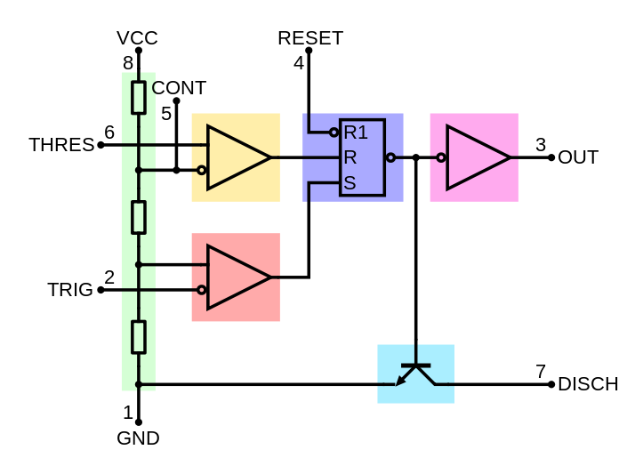
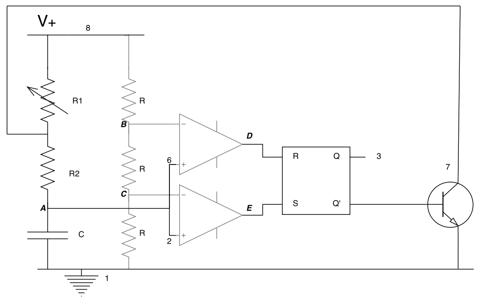

Approche théorique
Idée générale
Développer un circuit permettant d'allumer une première LED et de l'éteindre à une certaine fréquence. Quand cette première LED est éteinte, une deuxième LED doit être allumée. Aussi, on doit pouvoir changer la fréquence du circuit avec un potentiomètre.
On peut réaliser ceci avec un timer 555 (1 et 2) en mode astable, servant alors d'oscillateur dont la fréquence est déterminée par deux résistances et une capacité.
Pour mesurer la fréquence et le rapport cyclique avec précision, on peut mettre un buzzer (3) en parallèle avec une LED. Celui-ci émettra un son court à chaque alternance (le signal reçu est en DC).
(2) Timer 555 : schématique

Fonctionnement du NE555 en mode astable
Diagramme en blocs d'un montage astable de NE555.
Les trois résistances R sont identiques. On remarque directement les tensions suivantes :
\(V_A = \frac{2}{3}V_{cc}\)
\(V_B = \frac{1}{3}V_{cc}\)
On remarque que les deux aops sont placés de manière à ce que :
1. Si \(V_C > V_A\), alors \(V_D = V_{cc}\), sinon \(V_D = 0V\)
2. Si \(V_C < V_B\), alors \(V_E = V_{cc}\), sinon \(V_E = 0V\)
Ensuite, au niveau de la bascule RS :
1. Si \(V_D = V_{cc}\), c'est un reset : \(Q = 0V, \bar{Q} = V_{cc}\).
Le BJT est passant donc la borne supérieure de R2 est connectée par une faible impédance à la terre. La capacité se décharge dans R2.
2. Si \(V_E = V_{cc}\), c'est un set : \(Q = V_{cc}, \bar{Q} = 0V\).
Le BJT est bloqué, la capacité se charge à travers R1 et R2.
On a donc en sortie de Q et Q' des signaux carrés complémentaires dont la durée est déterminée par R1, R2 et C.
Circuit complet et calculs
Les éléments suivants ont été ajoutés :
- un potentiomètre à la place de R1, il permettra de changer le temps de recharge de la capacité.
- une LED D1 en parallèle avec R1. Elle sera allumée quand on "reset" la bascule, quand la capacité se décharge.
- une LED D2 entre 3 (sortie Q de la bascule RS) et la terre. Elle sera allumée lorsque l'on "set" la bascule, quand la capacité se recharge.
Les temps haut et bas sont donnés par :
$$t_h = ln(2).(R_1 + R_2).C$$
$$t_l = ln(2).R_2.C$$
La fréquence vaut donc :
$$f = \frac{1}{t_l + t_h} = \frac{1}{ln(2).(R_1 + 2R_2).C}$$
Approche pratique
Circuit branché
Mesures
Observations
Conclusion
Ici